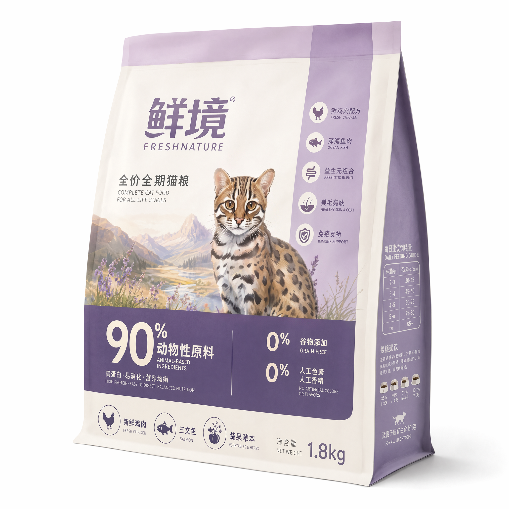
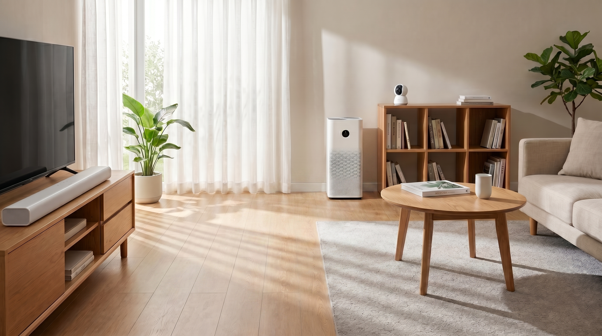
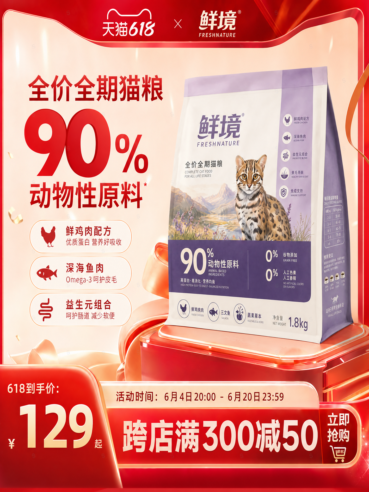

从 0 肉粉成型的低温慢烘工艺，到专属农场的自然放养。详情页的设计，我们摒弃了冗杂的堆砌，采用清晰的网格化布局（Grid System）。用理性的数据可视化与透明的工艺拆解，回应消费者的每一份挑剔。

"身在都市，心归自然。"在猫粮的视觉全案中，我试图打破传统宠物食品温吞的视觉套路，将"原始的狩猎本能"与"现代的居家陪伴"进行强烈的视觉对撞。从丛林深处汲取灵感，我们将 90% 的动物性原材转化为极具张力的自然意象；再通过严谨的电商视觉逻辑，将品牌概念平稳落地。这不仅是一次视觉的探索，更是为"天然纯粹"的品牌基因寻找最精准的商业表达方式。
当野性回归日常，每一餐都是一次自然的洗礼。
剥离掉外在的狂野，在极简的现代空间里，它是温柔的陪伴，也是连接人与自然的隐形纽带。


视觉的张力，最终要回归商业的转化。
在 618 的促销视觉构建中，我们用极具冲击力的红色大促氛围，碰撞产品包装沉稳的紫色调，让"90%动物性原料"的核心卖点在第一视觉层级瞬间引爆。

从 0 肉粉成型的低温慢烘工艺，到专属农场的自然放养。详情页的设计，我们摒弃了冗杂的堆砌，采用清晰的网格化布局（Grid System）。用理性的数据可视化与透明的工艺拆解，回应消费者的每一份挑剔。